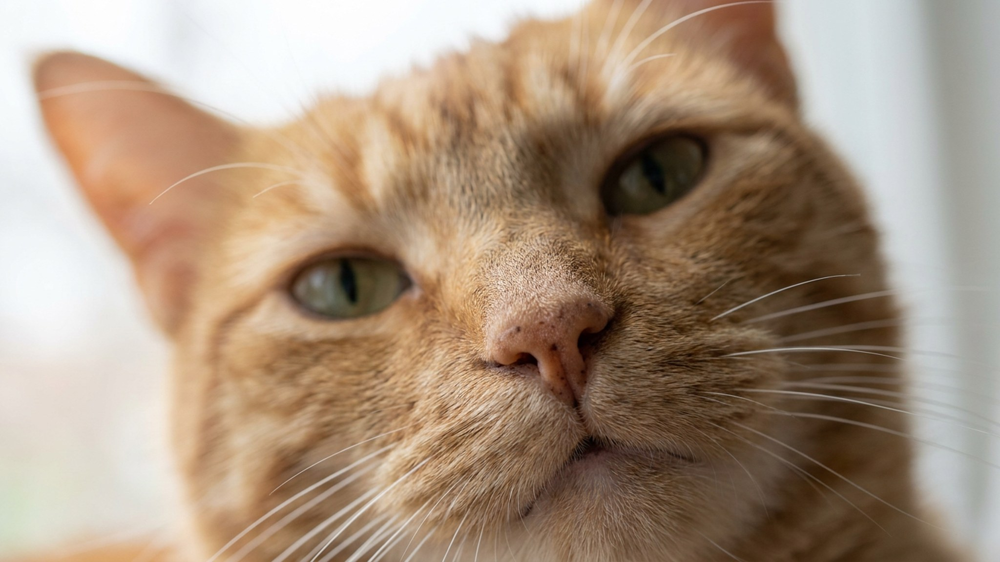

Почти каждый второй владелец берёт ватную палочку и уверенно лезет ею в ухо питомца — вглубь, «чтобы вычистить». На деле это загоняет загрязнения дальше по слуховому проходу и может травмировать нежную кожу. Здоровое ухо у кошки и собаки умеет очищаться само — вопрос в том, когда вмешиваться стоит, а когда лучше не трогать. Ниже — правильная техника, нужная частота и четыре ошибки, которые делают уход бесполезным или вредным.
🐾 Дневник здоровья питомца — в кармане
Вес, прививки, симптомы и напоминания в одном приложении. AnimaLife следит за здоровьем питомца вместо вас.
Здоровое ухо кошки или собаки справляется само: мелкие загрязнения выводятся наружу естественным путём. Регулярная чистка «на всякий случай» нарушает этот баланс и раздражает кожу. Хороший ориентир — смотреть, а не чистить: загляните в ухо раз в неделю. Небольшое количество светло-бежевого или желтоватого налёта — норма.
Внимательнее стоит быть с породами, у которых ушные раковины закрыты свисающими ушами (кокер-спаниели, бигли, вислоухие кошки): вентиляция хуже, влага задерживается. Также после купания насухо промокните ушную раковину снаружи мягкой тканью — не ватой внутрь, а именно снаружи.
Понадобятся: ветеринарный лосьон для ушей и ватные диски или кусочки марли. Ватные палочки — не для слухового прохода.
Нужный лосьон и частоту процедур для конкретного питомца лучше уточнить у ветеринара: у здоровых короткоухих кошек это может быть раз в месяц или реже, у собак с висячими ушами — чаще.
Регулярный осмотр помогает вовремя заметить изменения. Вот сигналы, при которых стоит обратиться к врачу, не откладывая:
Перечисленное — не повод для самостоятельных действий, а повод для визита. Что именно происходит и как с этим работать — обсудите с ветеринаром: средство и схему подбирает врач после осмотра.
🐾 Не уверены, что это опасно?
Опишите симптом в AnimaLife — AI-ветеринар за минуту подскажет, что в пределах нормы, а когда пора к врачу.
🐾 Понравился разбор?
Подпишитесь на канал — каждый день разбираем по одному тревожному симптому у кошек и собак: что в пределах нормы, а когда пора к врачу. Подпишитесь, чтобы не пропустить разбор, который может спасти здоровье вашего питомца.
Материал носит информационный характер и не заменяет очную консультацию ветеринара.